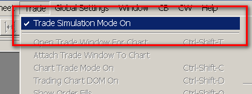

Trade Simulation
- Introduction
- Using Trade Simulation
- Trade Simulation Position Quantity Calculation
- Using Trade Simulation Mode and Live Trading at Same Time
- Multiple Trade Simulation Accounts
- Using Trade Simulation During Replays
- Trade Simulation Accuracy and Bid/Ask Prices During Replays
- How Orders Are Filled
- Time In Force for Trade Simulation Mode
- Midpoint Price Chart Bars and Fill Prices
- Why Fill and Order Prices Can Be Wrong or Unexpected / Orders Do Not Fill When Expected
- Order Fills Do Not Match with Price Bars
- Viewing Open Orders and Order Data
- Viewing Positions and Current Profit/Loss
- Account Balance
- Trade Simulation When Disconnected from Server
- Automatic Enabling of Trade Simulation Mode
- Solving Order is Expired Issue
- Sharing Trade Simulation Data in Other Instances
- Viewing Historical Trade Activity and Trade Statistics (Opens a new page)
- Trade Position Quantity During Replay and Jumping Back (Opens a new page)
Introduction
Sierra Chart provides a Trade Simulation feature which simulates the acceptance, management and filling of Trade Orders, and tracking of Trade Positions internally in Sierra Chart. This simulates trading as if you were connected to a live trading account.
Detailed trading results are provided and can be analyzed through the Trade >> Trade Activity Log.
The Trade Simulation Mode feature also works during a chart replay.
This feature can be used when connected to a Data only service and can be used when connected to a Trading service when you do not want to send orders to your Trading service and instead want to have them simulated.
All trading functionality in Sierra Chart is supported when using Sierra Chart Trade Simulation Mode.
However, Trade >> Trade Positions Window and Trade >> Trade Account Monitor do not provide any information for the internal Trade Simulation Mode of Sierra Chart. There is no account balance tracking in Trade Simulation Mode and positions are viewed only within the charts themselves. Trade >> Trade Orders Window will list simulated orders though.
Orders submitted through charts when in Trade Simulation Mode, will not have positions which are accessible through the DTC Protocol Server. For this type of functionality, you need to use the Simulated Trading Service .
There is also the server-based Simulated Trading Service available which also provides account balance tracking and provides a very realistic simulated server-based trading service. However, that service cannot be used during chart replays.
It is important to be aware of differences between simulated trading versus actual live trading. Refer to Differences Between Live Automated Trading and Simulated Automated Trading.
Using Trade Simulation
{kind=link}
- To use the trade simulation feature, simply select Trade >> Trade Simulation Mode On on the menu and make sure it is checked. If trade simulation mode is active, then there will be a check mark by this menu command. If it is not active, then there will not be a check mark by this menu command.
- When Trade Simulation Mode is enabled, then on the title bar you will see the word [Sim], indicating Sierra Chart is in Trade Simulation Mode.
- Select Chart >> Chart Settings, on the menu. Verify that the Tick Size is set properly for the symbol. The Tick Size represents the smallest increment that the symbol trades in. For typical stocks, use .01. For mini S&P futures (ES), you usually will use .25. Normally the Tick Size is set properly from the Global Symbol Settings.
- Press OK.
- Make certain you are connected to the real-time data feed by selecting File >> Connect to Data Feed. This is necessary to receive real-time prices.
- When in Trade Simulation Mode, all trading functionality in Sierra Chart works normally with one exception, and that is orders are not sent to your trading service and are instead are simulated within Sierra Chart.
- An order that you submit, will be processed within Sierra Chart. If Sierra Chart is not running, then the order cannot fill if it has not already filled while Sierra Chart is running.
Trade Simulation Position Quantity Calculation
Each chart that is used for trading or is displaying a Trade Position line and Orders, has in it what is called the Trades list which is used to keep track of the trades and calculate the current Trade Position Quantity for that chart.
For an understanding of how the Position Quantity in the chart is determined, refer to Open Quantity Field Calculation.
During a chart replay, only the fills up to the Date-Time where the replay began are loaded in the Trades list and affect the initiall Position Quantity. Any other order fills after this Date-Time which exist, are just ignored and have no effect upon the Position Quantity.
The first fill loaded into the chart is affected by the setting Chart >> Chart Settings >> Trading >> Order Fills Start Date-Time. Normally the setting should be left blank in the case of simulated trading, which will cause all order fills to be loaded in the case of simulated trading. If it is changed, it will alter the Position Quantity.
For further details about this, refer to Order Fills Start Date-Time.
When using the Order Fills Start Date-Time setting you will need to uncheck Chart >> Chart Settings >> Trading >> Load Order Fills for Current Day Only.
There is initial order fill filtering for the Trades list used in a chart and by the Trade Statistics, Trades and Period Stats tabs of the Trade Activity Log, so the first fill loaded is aligned to the beginning of a new Trade Position to generate consistently accurate trading statistics including the current Trade Position Quantity and Daily Profit/Loss.
When you start a Chart Replay and plan to do trading, and you do not clear the existing Trade Activity which would include any prior order fills, you are prompted for this, and during that replay you also start to perform trading, then you will have a situation where when you stop the replay, both the prior order fills and any new order fills during the latest replay will be combined together giving you an incorrect Position Quantity after the replay is finished and you reload the chart.
This is why it is important, to always clear the prior Trade Activity when starting a replay.
If you do not, then during that replay, when you encounter the Date-Time of a prior order fill, it is not going to be added to the chart and it will not affect the Position Quantity.
The chart has to be reloaded, and that date and time has to be loaded during the initial load of data, for that order fill to be loaded into the Trades list in the chart and affect the Position Quantity.
This also creates a problem when you jump back in time and you start jumping before existing order fills, as you then replay forward, those order fills will not be loaded into the Trades list in the chart and have an effect on the Position Quantity.
However, when the chart replay is finished they will affect the Position Quantity and then give you a completely different Position Quantity which would likely be unexpected.
Another important thing to understand about the reported Position Quantity in a chart when in Trade Simulation Mode is that since it is calculated from the order fills loaded in the chart, and there is a request for those order fills that occurs in the background and takes time to complete, the fills do not load immediately into the chart when the chart is loaded or reloaded.
Therefore, the Position Quantity may not immediately show up and take time, possibly a few seconds or longer. The background query has to complete and then when the order fills are loaded in the chart upon completion of the query, the Position Quantity will then display on the Trade Window for the chart and also the Position line on the chart, assuming it is a nonzero quantity.
Using Trade Simulation Mode and Live Trading at Same Time
It is not supported within a single instance of Sierra Chart to use Trade Simulation Mode and also perform live trading with the external trading service at the same time.
To do this requires using two separate instances of Sierra Chart. One with Trade Simulation Mode enabled and the one without it enabled.
To use another instance of Sierra Chart refer to Using DTC Server for Data and Trading in Another Sierra Chart Instance.
The Sub Instance will need to be the instance of Sierra Chart that has Trade >> Trade Simulation Mode On enabled. It cannot be the main instance.
Multiple Trade Simulation Accounts
Newer versions of Sierra Chart supports multiple Trade Simulation Accounts.
The number of trade simulation accounts is set through Global Settings >> General Trade Settings >> Number Simulation Accounts. Specify a number between 1 to 400.
The main reason for multiple simulation accounts is that if you are performing back testing with different parameters, you can run each back test in a separate trade simulation account and have all of the back testing results saved in each individual account, for review within the Trade >> Trade Activity Log.
You can also run multiple trading systems at the same time and perform manual trading for the same symbol, with real-time data, if each of them is using a different simulated trading account.
Select the Trade Account on the Trade Window for the chart or Trade DOM as shown in the image below.
{kind=link}
Using Trade Simulation During Replays
Trade Simulation Mode is fully supported when Intraday charts are replayed. Only Intraday charts can be replayed. Therefore, to use Trade Simulation Mode during a replay means you can only use an Intraday chart. Not a Historical Daily chart. Follow the steps below to use Trade Simulation Mode during chart replays.
- Select Chart >> Chart Settings, on the menu. Verify that the Tick Size is set properly for the symbol. The Tick Size represents the smallest increment that the symbol trades in. Normally the Tick Size is set properly from the Global Settings >> Symbol Settings.
- Press OK.
- Replay your charts following the instructions on the Replaying Charts page.
- To enter an order, you simply enter orders as you normally would using any of the methods for order entry. You are also able to modify and cancel orders using the standard methods in Sierra Chart.
Additional Steps When Replaying Multiple Charts or Trade DOMs
- Replaying Multiple Charts: When you are using Trade Simulation Mode during replays and you are replaying more than one chart for the same symbol you are trading, then you need to follow these additional steps. Otherwise, if you do not, then the Last trade price on the charts and Trade DOMs replaying for the same symbol, will not always match.
- The Session Times in Chart >> Chart Settings in all of the charts that are replaying for the symbol you are trading, must be identical or they need to be 0:00:00 to 23:59:59.
- Set the Days to Load setting under Chart >> Chart Settings for any other charts or Trade DOMs being replayed to be the same or greater than the chart you are controlling the replay from. Important: This is especially true for Trade DOMs.
- You must also have started replaying all of the charts by using For All Charts in Chartbook on the Replay Control Panel window. You cannot start the replays individually.
Trade Simulation Accuracy and Bid/Ask Prices During Replays
This section explains Trade Simulation accuracy when replaying a chart. This also applies to Auto-Trade system Replay Based Back-Testing because Auto-Trade system Replay Based Back-Testing is performed by replaying a chart.
This section also explains how Bid and Ask prices are determined during replays and for Bar Based Back Testing.
When a chart is updating with live market data, the Bid and Ask are determined by the live market data feed. In this case, the Bid and Ask prices are never simulated.
Orders are filled based on Bid and Ask, and Last trade price data. For complete information about how the different order types are filled, refer to the How Orders Are Filled section.
During a replay, there are two different methods by which the Bid and Ask prices are determined.
Method 1 - Recorded Actual Bid and Ask Prices
In the case of Method 1, the method by which the Bid and Ask prices are determined is from the actual prices that existed in real time. For many of the supported Data and Trading services, when using an Intraday Data Storage Time Unit of 1 Tick, the actual Bid and Ask prices during a replay are set to what they actually were during the real-time trading. This data is available from June 23, 2014 when using newer versions of Sierra Chart. To take advantage of this feature, select Global Settings >> Data/Trade Service Settings. Set the Intraday Data Storage Time Unit to 1 Tick.
If you make a change to the Intraday Data Storage Time Unit setting in the Data/Trade Service Settings window, then you will need to re-download the data in the Intraday chart by going to the chart and selecting Edit >> Delete All Data And Download. This only needs to be done once for each symbol.
In the case of Method 1, to determine if you actually have the historical Bid and Ask prices, go to a chart and select Edit >> Edit/Download Data - Intraday chart. When looking at an individual data record, if the Open is 0 and the Number of Trades is 1, then the High and Low fields represent the Ask and Bid prices respectively.
In the case when the actual Bid and Ask prices are stored with every trade, an ACSIL study can access the actual Bid and Ask prices during a replay with sc.Ask and sc.Bid.
The following describes corrections which are made to the Bid Price and Ask Price in order to have reasonable prices to work with when filling orders.
If the BidPrice is greater than the AskPrice then both the BidPrice and AskPrice will be set to the LastPrice.
If the LastPrice is greater than the AskPrice, then the BidPrice is set to the LastPrice minus the symbol tick size, and the AskPrice is set to the LastPrice. Else if the LastPrice is less than the BidPrice then the BidPrice is set to the LastPrice and the AskPrice is set to the LastPrice plus the symbol tick size.
When a correction is made, you can tell by looking at the Order Action Source field for the order fill in the Trade Activity Log. It will contain the following text: Bid ask corrected.
Method 2 - Estimated Bid and Ask Prices
The second method by which the Bid and Ask prices are determined is they are derived from the High, Low, Close/Last values of the underlying data records read into the chart from the Intraday data file during a chart replay.
There is a special algorithm used to determine the Bid and Ask from these values (explained below). The Bid and Ask will always be 1 tick apart. Each of the High, Low, Close/Last values from the underlying data records are processed individually.
The High, Low, Close/Last data record values are processed individually during a replay. The Low is processed first if the Close is closer to the High compared to Low, or the High is processed first if the Close is closer to the Low compared to the High.
In the case of a Bar Based Back Test, the Bid and Ask prices are determined from the Open, High, Low, Close values of the chart bars. The order in which these are processed from the chart bars is explained in the Bar Based Back Testing Notes section.
As these prices are being processed, Sierra Chart checks if the current price, whether this is the Open, High, Low, or Close/Last, has moved up, down, or stayed the same compared to prior Open, High, Low, Close previously processed.
If the price has moved up compared to prior price processed (one of the Open, High, Low Close values), then it is assumed that the trade occurred at the Ask price. The Ask price will be set to this current price and the Bid price will be set one tick lower.
If the price has moved down compared to the prior price processed, then it is assumed that the trade occurred at the Bid price. The Bid price will be set to this current price and the Ask price will be set one tick higher. If there is no change with the current price compared to the prior price processed (one of the Open, High, Low Close values), then the Bid and Ask remain the same.
Keep in mind that the High, Low, Close/Last values we are referring to here are from the underlying data records in the Intraday data file in the case of a chart replay. Not the bar values necessarily. However, they are the bar values in the case of a Bar Based Back Test.
The time frame of the data records in the file could range anywhere from 1 tick to 1 minute. A smaller time frame per record will give you the most accurate simulation results, although back testing will be slower.
The time frame of the data records in the file depends upon the Data or Trading service you are using and a setting. Select Global Settings >> Data/Trade Service Settings. Set the Intraday Data Storage Time Unit to 2 seconds or less for the greatest accuracy.
If you make a change to the Intraday Data Storage Time Unit setting in the Data/Trade Service Settings window, then you will need to re-download the data in the Intraday chart by going to the chart and selecting Edit >> Delete All Data And Download.
Once you re-download the Intraday data for a symbol in one of the charts, you do not have to do it for other Intraday charts of the same symbol. Since all charts of the same symbol share the same data file.
When the Bid and Ask prices need to be estimated, the actual values will not represent what they necessarily were in real-time. Therefore, trade simulation results during a replay will differ compared to actual live market conditions.
Increasing Spread Between Bid and Ask Prices
This information applies to Intraday charts only. If you want to have the Bid and Ask be more than 1 tick apart during a replay or during back testing, then follow the instructions below:
- Select Global Settings >> Data/Trade Service Settings.
- Set the Intraday Data Storage Time Unit to 1 Second.
- Press OK.
- Go to the Intraday chart and re-download the data with Edit >> Delete All Data and Download. This will ensure the data records in the Intraday chart data file are of a 1 second timeframe each.
- Select Chart >> Chart Settings.
- Increase the Tick Size. If you make it twice the actual Tick Size, then this will result in the Bid and Ask being 2 ticks apart.
How Orders are Filled
This section explains how the different order types are filled in Trade Simulation Mode. The Last, Bid, and Ask prices are used for this.
In the case of when using Trade Simulation Mode with real-time market data, the Bid and Ask are provided by the data feed. In the case of a chart replay, they are calculated and the method by which they are is explained in the Trade Simulation Accuracy and Bid/Ask Prices During Replays section.
To ensure no market data is missed when evaluating simulated orders for fills during real-time market data updating, make sure the Global Settings >> Data/Trade Service Settings >> Number of Stored Time and Sales Records is set high enough. To be safe, you may want to set this to 10000. The higher the number, the more memory used if you track a lot of symbols in real-time within Sierra Chart.
Each Time and Sales record stores either a Trade or a Bid and Ask update. The number of records needs to be high enough to hold the records between each chart update. The chart update interval is set through Global Settings >> General Settings >> Chart Update Interval.
Select Window >> Current Quote Window, to view the current Bid and Ask prices.
When an order fills in Sierra Chart Trade Simulation Mode, the current Bid, Ask and Last trade prices at the time of the order fill are logged with the order Fill entry in the Trade >> Trade Activity Log >> Trade Activity tab. Look at the Order Action Source field. Example:
This is very useful information to know exactly what the Bid, Ask and Last trade prices were at the time of the fill to know exactly what triggered the order fill.
If you believe there is a problem with the Bid and Ask prices, then you need to determine the reason for this or provide support some simple background information about what you are doing in order for us to provide some help.
Market Orders
A Buy market order will be filled at the Ask price. A Sell market order will be filled at the Bid price. Market orders are always filled immediately. If the Bid and Ask prices are 0, then a market order will fill at the last trade price.
Limit Orders
Limit orders are filled based upon the Bid and Ask prices.
A Buy Limit order will only be filled when the Ask price is equal to or less than the limit price. And it will be filled at the Ask price when this condition is met.
A Sell Limit order will only be filled when the Bid price is equal to or greater than the limit price. And it will be filled at the Bid price when this condition is met.
When the best Bid and Ask prices are both beyond the last trade price, and the conditions for filling the order have been met as explained above, the last trade price will be used to fill the order. This is so that the order fill matches with the last trade price which is what users normally expect. Otherwise, it generates questions/complaints to us about why the price did not fill as expected even though the fill was technically correct based on the bid/ask.
For more realistic order fills according to the order position in the queue, when there is bid size and ask size data or when market depth data provided for the symbol, enable the Estimated Position in Queue Tracking option. This option only applies to non-replaying charts. In this particular case a Buy Limit order can fill when it is at the best Bid price once its Position in Queue goes to 0. A Sell Limit order can fill when it is at the best Ask price once its Position in Queue goes to 0.
During a bar based back test, a resting Limit order will not fill at a price better than the Limit price if the bid and ask prices processed are beyond the Limit order price and have triggered the Limit order price. Instead the order will be filled at the Limit order price, which can be a worse price than the processed bid and ask prices. This happens in order to simulate smooth price movement in the case where when running a bar based back test, not every price tick is necessarily available.
Stop Orders
A Buy Stop order will only be filled when the current Last trade price is equal to or greater than the Stop price. And it will be filled at the current Ask price when this condition is met. In the case where the Bid and Ask prices are higher than the last trade price, then the Buy Stop order will be filled at the last trade price +1 Tick.
A Sell Stop order will only be filled when the current Last price is equal to or less than the Stop price. And it will be filled at the current Bid price when this condition is met. In the case where the Bid and Ask prices are lower than the last trade price, then the Sell Stop order will be filled at the last trade price -1 Tick.
During a replay the Bid and Ask prices are estimated if there is not tick by tick data, or actual if there is tick by tick data. Refer to Trade Simulation Accuracy and Bid/Ask Prices During Replays.
During a Bar Based Back Test, a resting Stop order will not fill at a price which is more than 1 tick away from the Stop price if the Bid and Ask prices processed are beyond the Stop order price and the Last trade price has triggered the Stop. So the order will be filled at the Stop order price +/- 1 Tick, which can be different than the processed Bid and Ask prices. This happens in order to simulate smooth price movement in the case where when running a bar based back test, not every price tick is necessarily available.
During a Bar Based Back Test, in the case where a resting Stop order filled at a price which is within 1 tick from the Stop price if the Bid and Ask prices processed are beyond the Stop order price and the Last trade price has triggered the Stop (as explained above), the Low or High of a bar which did trigger the Stop, still is recorded in the Highest Price While Open and Lowest Price While Open fields with the order fill and does affect the Trade Statistics fields like Runup, Drawndown, and Maximum Open Position Profit and Loss. Therefore, this can result in more extreme values which maybe inconsistent with what is expected from the actual Stop fill price.
Stop-Limit Orders
A Stop-Limit order consists of both a Stop order and a Limit order. First the Stop order is effective and and triggers according to the Stop order rules above.
After the Stop order has been triggered according to the Stop Order rules, the order then becomes a Limit order and the Limit order fills according to the Limit order rules above.
It needs to be understood, that a Stop order is triggered by the Last trade prices and the Limit order is filled according to the current Bid and Ask prices. You need to be aware of this in order to understand the behavior that you see.
Market If Touched Orders
A Buy Market If Touched order will only be filled when the current Last trade price is equal to or less than the Trigger price. And it will be filled at the Ask price when this condition is met.
A Sell Market If Touched order will only be filled when the current Last price is equal to or higher than the Trigger price. And it will be filled at the Bid price when this condition is met.
Time In Force for Trade Simulation Mode
The following lists the options for Time In Force and describes how each is handled during Simulated Trading within Sierra Chart.
These apply to the Time In Force setting on the Trade Window and the Time in Force for Attached Orders setting. You need to check both of those settings to ensure you have them set as required.
Day
When Time In Force is set to Day and orders are entered in Simulation Mode, then these orders are cancelled at 1 second past the End Time as defined in the Global Symbol Settings. The time zone for the End Time is according to the Time Zone setting for the symbol as set in the Global Symbol Settings.
Note that this is not the End Time for the session as defined in the Chart Settings.
When an order is canceled because it has expired because it has a Time in Force of Day, the Order Action Source field for the order in the Trade Activity Log will contain the following text Order is expired. The Trade Activity Log has full details of all trade activity and is what you should use to understand all trading behaviors.
Good Till Cancelled
When Time In Force is set to Good Till Cancelled and orders are entered in Simulation Mode, then these orders will not be cancelled unless they are filled or are cancelled by some other intervention.
Good Till Date Time
Immediate Or Cancel
When Time In Force is set to Good Till Cancelled and orders are entered in Simulation Mode, then these orders will not be cancelled unless they are filled or are cancelled by some other intervention.
All or None
When Time In Force is set to Good Till Cancelled and orders are entered in Simulation Mode, then these orders will not be cancelled unless they are filled or are cancelled by some other intervention.
Fill Or Kill
When Time In Force is set to Good Till Cancelled and orders are entered in Simulation Mode, then these orders will not be cancelled unless they are filled or are cancelled by some other intervention.
Send Order At Time
When Time In Force is set to Send Order At Time and orders are entered in Simulation Mode, then these orders are processed at the time defined in the Time Field.
Midpoint Price Chart Bars and Fill Prices
Some symbols with some Data or Trading services will provide only Bid and Ask prices. There are no last trade prices. By default, for this type of data, the price range of the bars in the chart will only be based upon the average of the Bid and Ask prices. This is known as the midpoint price. Therefore, the High and Low values for a chart bar will not include the highest Ask or the lowest Bid during the timeframe of that chart bar.
For more information, refer to Forex/CFD Market Data and Data Recording Modes. It is possible to use a different Data Recording Mode with the symbol.
What this means, is that when an order fills, the fill price can very well be beyond the extreme High and Low for chart bar. Orders will fill at the Bid or Ask price which can be beyond the High and Low. This is important to understand.
Why Fill and Order Prices Can Be Wrong or Unexpected / Orders Do Not Fill When Expected
The following issues with Simulated orders when in Trade Simulation Mode:
- Market orders are filling at prices away from the current price.
- When buying or selling at the Bid or Ask, the order price is at an unexpected price.
- Limit or Stop Orders are not filling when expected or fill unexpectedly.
Can be due to the following:
- Invalid Bid and Ask data: Invalid Bid and Ask price data can cause the above described issues. Although, it is not possible to have invalid Bid and Ask data during replays unless the Tick Size setting in Chart >> Chart Settings is wrong.
When you are receiving real-time data from the connected Data or Trading service, the service could be providing invalid Bid and Ask data. To confirm this, select Window >> Current Quote Window.
Look at the Bid and Ask prices. If they are significantly different than the Last trade price, then they may not be correct. In this case you may want to reconnect to the data feed by selecting File >> Disconnect and then File >> Connect to Data Feed.
Invalid Bid and Ask price data will not prevent a Stop order from filling. - The Bid and Ask prices are valid prices but are at values you do not expect. You can see the current Bid and Ask for the symbol of a chart through Window >> Current Quote Window. You can see what the Bid, Ask, and Last are the time an order fills since this information is logged. Refer to How Orders Are Filled.
- Having an incorrect Tick Size and Price Display Format settings. These are set in Chart >> Chart Settings.
- Misunderstanding about How Orders Are Filled. It is essential to understand how orders are filled. You may find that the order behavior that you are seeing is completely normal.
- For a simulated order to be evaluated for a fill, the following needs to be true:
- Trade >> Trade Simulation Mode needs to be enabled.
- The original chart the order was entered from needs to continue to be open while the order is in a working state (not with a Filled, Canceled, Error Status).
- The original chart the order was entered from needs to have Trade >> Show Orders and Position checked while the order is still working, for the order to be filled. Otherwise, the orders from the chart will not fill.
- The original chart the order was entered from needs to have the Trade Account set to the same Trade Account that was selected when the order was originally entered.
- The original chart the order was entered from needs to be set to the same Symbol as when the order was originally entered.
- In the case when the order is not associated with a chart replay, Sierra Chart must be connected to the data feed (File >> Connect to Data Feed).
- Sierra Chart must be running.
- Your computer must not be in a Sleep state.
None of the above is required when using the Simulated Trading Service. Orders will still fill without any of the above required conditions.
- In the case of when a chart is updating with real-time data, not during a chart replay, if Global Settings >> Data/Trade Service Settings >> Number of Stored Time and Sales Records is set too low like under 500 and also depending upon the Chart Update Interval setting, some prices can be missed which are used for filling orders. We recommend setting Number of Stored Time and Sales Records to 5000.
The Number of Stored Time and Sales Records setting cannot be set to 0. Otherwise, simulated orders will not be filled and the management of trailing stop orders will not occur. After changing this setting, reconnect to the data feed with File >> Disconnect and File >> Connect to Data Feed. - When using a Trade and Current Quote Symbol the orders will be filled using the pricing for that symbol and not the main Symbol of the chart.
Therefore, if the Trade And Current Quote Symbol is a lower liquidity symbol, the Bid and Ask prices could be significantly different compared to the main symbol of the chart.
Order Fills Do Not Match with Price Bars
If you notice that the price level that an order fills at on a chart bar is outside the high to low range of the chart bar, then this can be due to one of the following reasons:
- The Bid or Ask prices caused the Limit order to fill. For complete details about this, refer to How Orders Are Filled.
- If the order fill occurred when the chart is not replaying, then your computer's clock may not be set accurately since the order fills are time stamped using your local computer clock. Refer to help topic 38.
Viewing Open Orders and Order Data
Open orders can be viewed on a chart if Chart Trade Mode is on. To enable Chart Trade Mode, make sure there is a checkmark by Trade >> Chart Trade Mode On.
You can also view all of your orders through the Trade >> Trade Orders Window.
To sort the orders in the Orders list, click on a column header that you want them sorted by. For example, if you want all of the Open orders to be listed at the top, then click on the Status header once or twice and then they will be displayed at the top.
Viewing Positions and Current Profit/Loss
You can view the current simulated Trade Position for a particular Symbol and Trade Account through the Position Line on a chart, Trade DOM. Or on the Chart Stats tab of the Trade >> Trade Activity Log window.
To view the current Trade Position for a symbol and Trade Account, on a chart or Trade DOM, make sure there is a check mark by Trade >> Show Orders and Position on the menu. This menu command applies to the active chart or Trade DOM.
By default, this menu option will be checked when the chart is in Chart Trade Mode (Trade >> Chart Trade Mode On).
The Trade Position for the symbol will be displayed as a box and line on the chart or Trade DOM at the level of the Position Average Price. If you do not see the Profit/Loss value on the Trade Position line, then enable Trade >> Chart Trade Settings >> Position >> Display Profit/Loss on Position Line.
To view the current simulated Trade Positions in a central location, select Trade >> Trade Activity Log on the menu. Select the Chart Stats tab.
Simulated positions begin with the text [Sim]. On that tab you will only see Trade Position and other trading related data for symbols that have charts open for them, and where those charts are maintaining an internal Trades list. The internal Trades list will be maintained in the chart if the chart is in Chart Trade Mode or in the case of Trade DOM window charts.
The Trade >> Trade Positions Window will not show positions for an internal simulated trading account (Sim#).
Account Balance
Sierra Chart Trade Simulation Mode does not maintain an Account Balance. The account balances that you see on the Trade >> Account Balances Window are only for the external Trading service you may be using.
You will never see account balance information for an internal simulated trading account (Sim#) on that window.
As an alternative to not having account balance information in Trade Simulation Mode, we recommend using the Trades Tab on the Trade Activity Log for a listing of all of your trades. This includes a running sum of the profit or loss for those trades.
There is also the Trade Statistics Tab as well. Both the Trades and Trade Statistics tabs update has trading occurs.
The Sierra Chart Simulated Trading Service does support an Account Balance. You are able to set up an account with that service. That service also supports Account Balance Adjustments.
Trade Simulation When Disconnected from Server
Sierra Chart Trade Simulation Mode is a feature within the Sierra Chart software itself. The orders are filled on the client side (within Sierra Chart) according to the rules documented in the How Orders Are Filled section.
Therefore, when there are currently simulated Open orders entered from a chart that is not replaying, it is necessary for Sierra Chart to be connected to the data feed (File >> Connect to Data Feed) in order for the orders to fill.
When disconnected from the data feed or Sierra Chart is not running, the orders will not fill.
For additional information, refer to Why Fill and Order Prices Can Be Wrong or Unexpected / Orders Do Not Fill When Expected.
Automatic Enabling of Trade Simulation Mode
Trade >> Trade Simulation Mode On can only be enabled under the following conditions.
The user manually selects this command and places a check mark by it.
Sierra Chart is set to use a Data service selected through Global Settings >> Data/Trade Service Settings >> Service which does not support trading. When performing any kind of trading action such as submitting an order, Trade Simulation Mode will automatically be activated in this case.
Solving Order is Expired Issue
If the Time in Force for an order is Day, then when using Trade Simulation Mode, this order will expire at the end of the day. For further details refer to Time In Force for Trade Simulation Mode.
To see if this has occurred, go to the Trade >> Trade Activity Log and select the Trade Activity tab. Look at the OrderActionSource field for the last line of the order. It will contain the text Order is expired.
To prevent this, you need to set the Time in Force for main order to Good Till Canceled and the Time in Force for Attached Orders also to Good Till Canceled.
Sharing Trade Simulation Data in Other Instances
In general when Trade >> Trade Simulation Mode On is enabled within a particular Sierra Chart instance, the trading activity performed while in this mode is not shareable outside of the instance.
However, sub instances started from this main instance you are trading from can access the trading activity of the main instance , if these sub instances have Trade >> Trade Simulation Mode On disabled. To start a sub instance, refer to Using DTC Server for Data and Trading in Another Sierra Chart Instance.
If you want to be able to share simulated trade activity between different instances of Sierra Chart on the same or different computers, which are not sub instances, requires that you use the Simulated Trading Service. Each of these instances you want to access the same trading activity need to be connected to this Simulated Trading Service.
*Last modified Sunday, 30th April, 2023.